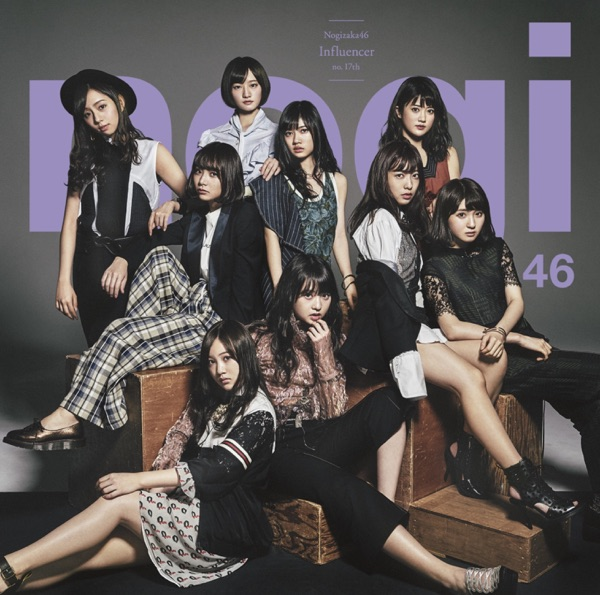
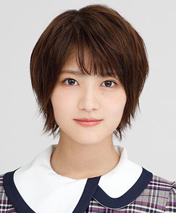

サカミチ
サカミチインフルエンサーいんふるえんさー

初収録リリース「インフルエンサー」のジャケット
フォーメーション
上が後列、下が前列です。色付きがセンター。（公式発表に基づく）
 新内眞衣
新内眞衣 井上小百合
井上小百合 寺田蘭世
寺田蘭世 北野日奈子
北野日奈子 伊藤万理華
伊藤万理華星野みなみ
 斉藤優里
斉藤優里 樋口日奈
樋口日奈 中田花奈
中田花奈
若月佑美高山一実
生駒里奈
生田絵梨花
松村沙友理
桜井玲香
秋元真夏
堀未央奈
西野七瀬
白石麻衣
 齋藤飛鳥
齋藤飛鳥衛藤美彩
参加メンバー（21名）
秋元真夏、生田絵梨花、生駒里奈、伊藤万理華、井上小百合、衛藤美彩、齋藤飛鳥、斉藤優里、桜井玲香、白石麻衣、高山一実、中田花奈、西野七瀬、樋口日奈、星野みなみ、松村沙友理、若月佑美、北野日奈子、新内眞衣、寺田蘭世、堀未央奈
この曲が披露されたライブ（149件）
新しい順に20件まで表示しています（全149件）。
同じリリースの曲
インフルエンサー、人生を考えたくなる、意外BREAK、Another Ghost、風船は生きている、三番目の風、当たり障りのない話